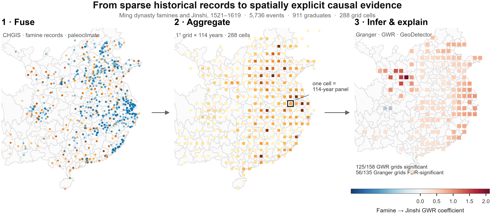
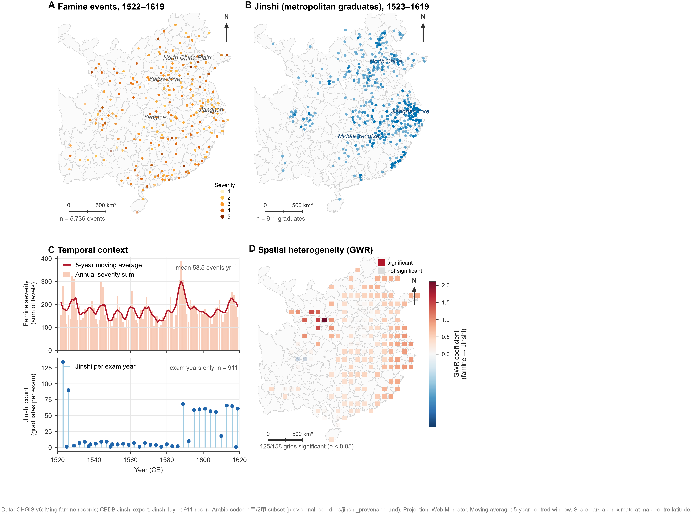
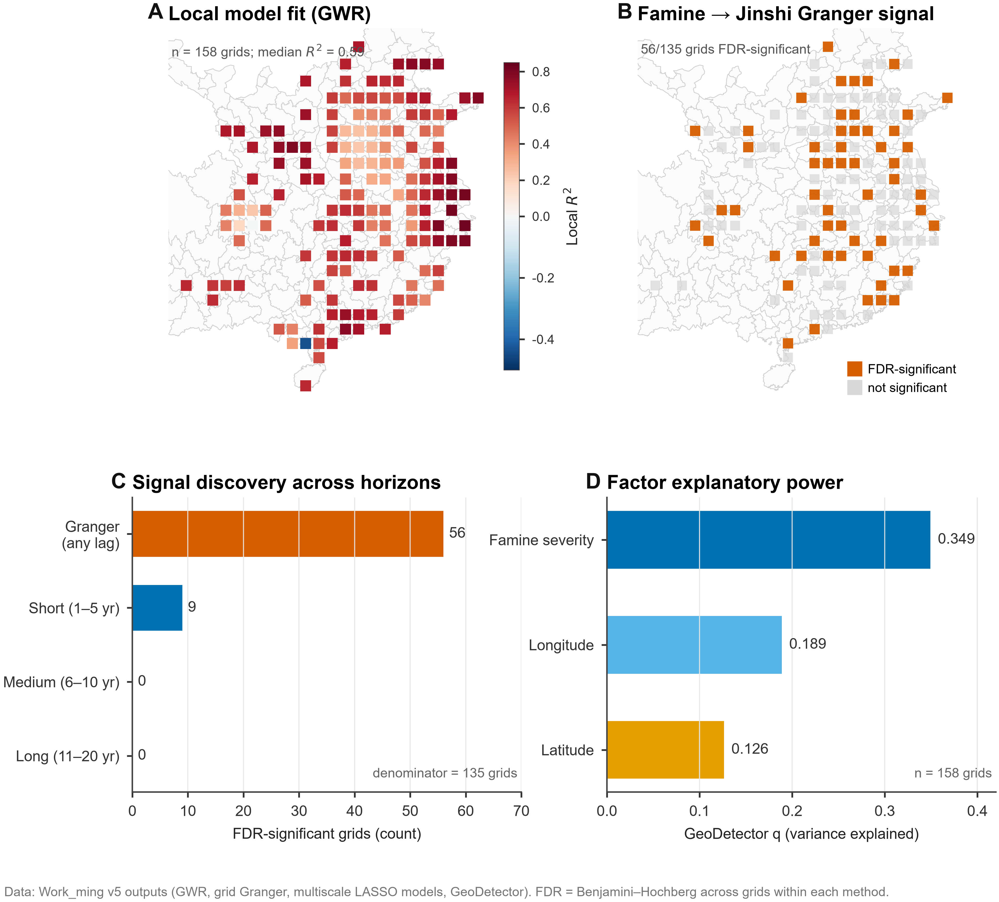
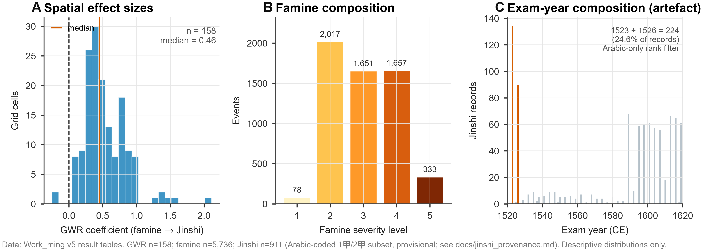

Famines and Imperial Exams in Ming China, 1521–1619
A reproducible spatiotemporal analysis of 5,736 famine records and 911 Jinshi records (Arabic-coded 1甲/2甲 subset) on a 1° grid × 114-year panel — from event points to spatially explicit causal evidence.
The question
Did environmental shocks suppress elite educational attainment in Ming China — and is that relationship stable across space and time? Historical records are sparse and unevenly reported, so the project treats them as a grid-year panel rather than as a set of points on a map.

Findings
- Spatial mismatch. Famines form river-basin belts; Jinshi concentrate in the Jiangnan core. The distributions overlap only partially.
- Spatially selective signal. Famine→Jinshi Granger causality survives FDR in 56 of 135 estimable grid cells.
- Short horizons dominate. Multiscale models find 9 FDR-significant grids at 1–5 years, and 0 at 6–10 / 11–20 years.
- Famine severity is the strongest factor. GeoDetector q = 0.349 (severity) vs 0.189 (longitude) and 0.126 (latitude).
- A documented negative result. CCM is not identifiable on these zero-inflated 114-year series; the project reports the failure instead of tuning it away.
Figures



Interactive map
Open the 1° aggregated map — famine severity, Jinshi totals, GWR coefficients and FDR-significant Granger cells. All layers are grid-level aggregates; individual records are not embedded.
Method in four steps
- Fuse — CHGIS points, famine records, Jinshi records, paleoclimate reconstructions.
- Aggregate — 1° grid, 114-year panel, severity/frequency/duration/lag features.
- Infer — FDR-controlled Granger, multiscale LASSO/BIC, GWR/SDM, GeoDetector.
- Explain — SHAP / GeoShapley, STL and CCM diagnostics; clustering kept exploratory.
Reproducibility
Figures are generated by three scripts from the result tables; exports are PDF, SVG and 600 dpi PNG. The shared style module fixes palette, typography and panel layout. Raw historical data are not redistributed; see data/README.md for the expected layout and the environment variables.
Code: MIT. Historical data remain subject to their original terms. Built with Python, GeoPandas, PySAL, mgwr, statsmodels, scikit-learn, SHAP and Matplotlib.